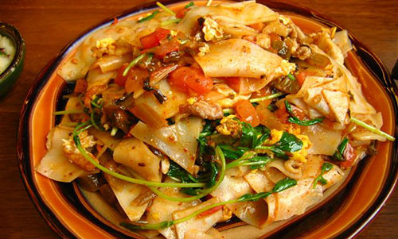
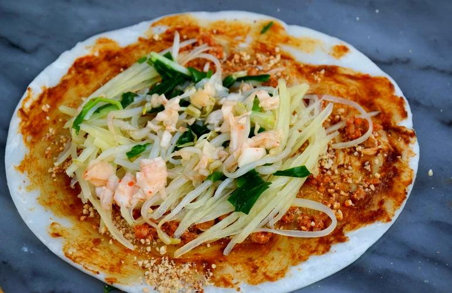
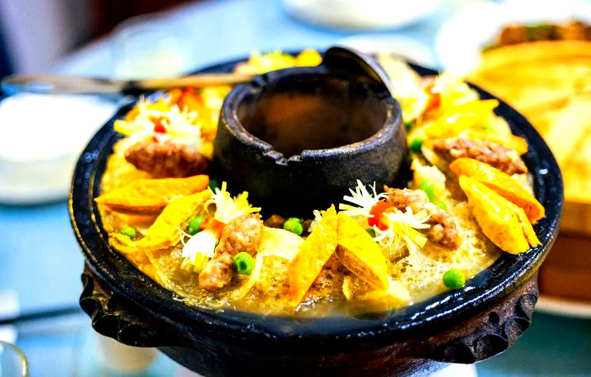
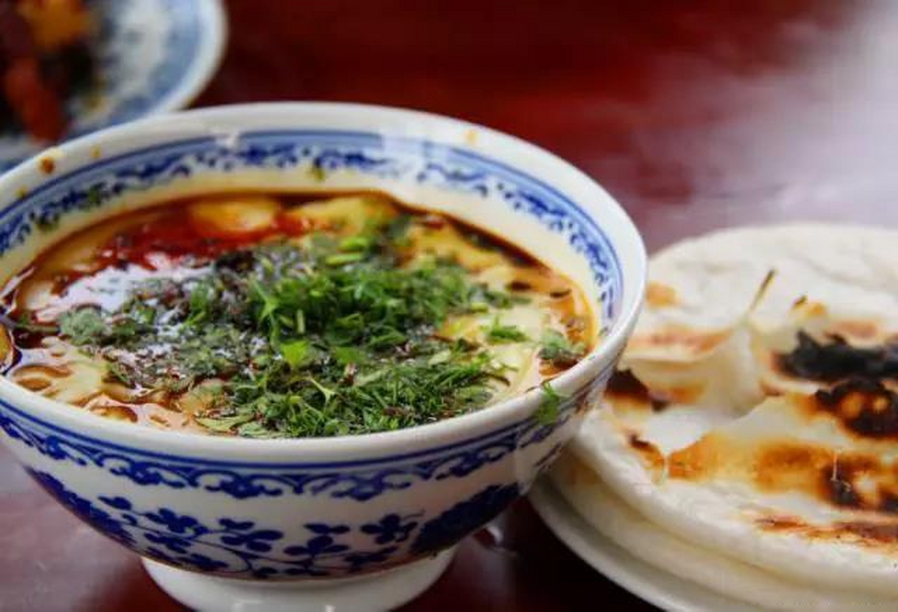

玩转腾冲，轻松出行
根据您的假期长短选择合适路线
上午前往热海景区，游览大滚锅、怀胎井等奇观，体验温泉煮鸡蛋；下午前往和顺古镇，漫步古巷道，参观和顺图书馆、艾思奇故居，感受侨乡文化。行程紧凑，适合时间有限的游客。
第一天：热海景区+火山地质公园；第二天：和顺古镇+国殇墓园+滇西抗战纪念馆；第三天：北海湿地或固东银杏村（秋季）。可留出半天享受温泉酒店，放松身心。
涵盖主要景点基础上，可增加云峰山、叠水河瀑布、绮罗古镇等；喜爱自然者可安排高黎贡山徒步；预留充足时间入住和顺或热海温泉酒店，深入体验腾冲慢生活与康养文化。
不可错过的腾冲味道

腾冲名小吃，相传南明永历帝逃亡至腾冲时，农家以饵块、鸡蛋、火腿、青菜等炒制献上，永历帝赞其"救了朕的驾"，故名大救驾。口感软糯鲜香，是到腾冲必尝的美食。

选用优质大米蒸熟舂制而成，炭火烤至外酥内软，涂上芝麻酱、辣椒酱等，可夹油条、香肠、豆芽等，是腾冲人喜爱的早点，街头巷尾均有售卖。

腾冲传统火锅，使用当地陶土烧制的土锅，以骨汤为底，层层码入酥肉、排骨、芋头、山药、泡皮等食材，炭火慢炖。汤鲜味美，是冬季聚餐的首选。

豌豆磨浆熬制而成，可搭配饵丝、米线、油条等食用。腾冲稀豆粉口感细腻，佐以辣椒、蒜油、芫荽等调料，风味独特，是当地人喜爱的早点之一。
根据需求选择合适住宿
住在古镇内可深度体验侨乡生活，清晨可在宁静的古街漫步，傍晚欣赏稻田落日。推荐选择临水或近稻田的客栈，部分客栈由传统民居改造，保留古建风貌。旺季建议提前预订。
热海景区附近有多家温泉度假酒店，部分房间配有私汤温泉池，可足不出户享受天然地热温泉。适合注重康养、希望放松身心的游客，建议安排至少一晚入住。
市区酒店档次齐全，从经济型到高档酒店均有选择，交通便利，餐饮、购物方便。适合作为中转住宿，或偏好现代设施的商务、家庭游客。
秋季前往固东银杏村，可选择入住村内农家乐，体验农家生活，品尝地道农家菜。观赏银杏最佳时段为清晨与傍晚，住村内便于错峰游览。